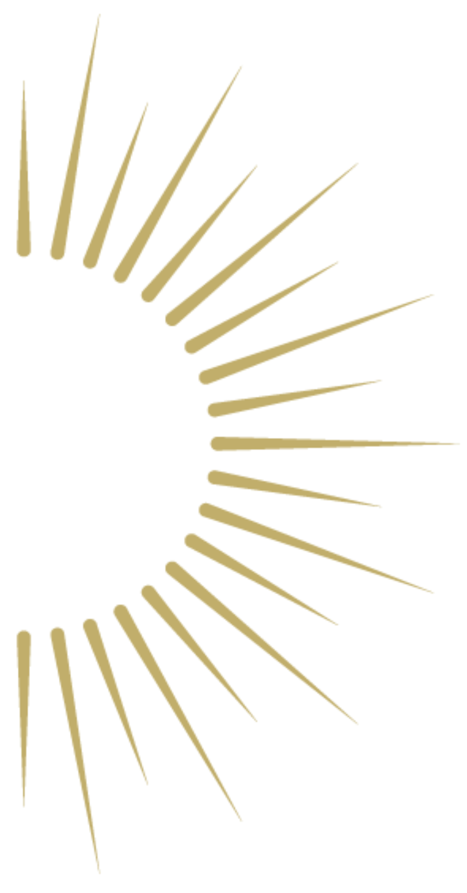
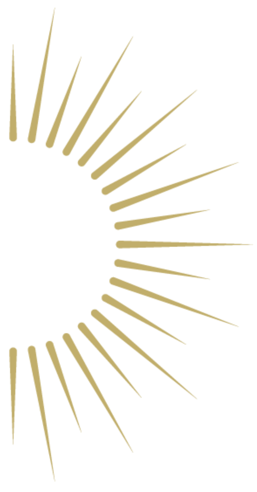

Vous avez des questions sur nos soins, nos services ou nos tarifs ? Vous trouverez ici les réponses aux questions les plus fréquemment posées.
Si vous ne trouvez pas la réponse que vous cherchez, n'hésitez pas à nous contacter directement.
À PROPOS DES SOINS
Le drainage lymphatique est particulièrement recommandé pour soulager l’engorgement que peut ressentir une femme enceinte. Il peut être pratiqué entre le 3ᵉ et le 6ᵉ mois de grossesse. Les soins facialistes peuvent être reçus tout au long de la grossesse, sans contre-indication.
Non, les soins sont exclusivement réservés aux femmes.
Pour le corps : Huiles bio à base d’amande douce, parfumées à la fleur d’oranger, a la fleur de tiaré ou encore une huile de récupération sportive selon vos besoins.
Pour le visage : Soins réalisés exclusivement avec des huiles bio de rose, prune, noyau d’abricot et amande douce, sélectionnées pour leur excellente qualité et adaptées aux besoins de votre peau.
Les soins sont accessibles à partir de 16 ans.
Non, bien au contraire ! Ce massage est profondément relaxant. Les muscles sollicités lors du soin sont rarement massés, ce qui procure une détente intense et un effet liftant naturel.
Oui, particulièrement ! Ce soin favorise l’élimination des toxines et des déchets accumulés dans la peau, permettant ainsi un nettoyage en profondeur de manière totalement naturelle.
Absolument ! Les techniques manuelles ont beaucoup évolué ces dernières années, offrant d’excellents résultats sans avoir recours à la médecine esthétique. Elles permettent de redonner éclat, fermeté et détente au visage, quel que soit l’âge.
La cure de drainage corps avec la méthode Renata França offre d’excellents résultats sur l’engorgement, la rétention d’eau et la cellulite. Après cette cure, quelques séances d’entretien annuelles peuvent être recommandées pour prolonger les bienfaits et maintenir les résultats obtenus.
Un cours personnalisé permet : Un diagnostic précis de votre visage, des exercices ciblés, adaptés à votre structure faciale et à vos objectifs et l’apprentissage d’une gestuelle efficace pour entretenir votre peau et optimiser l’application de vos soins
PRENDRE RENDEZ-VOUS
Vous pouvez prendre rendez-vous en ligne sur ce site web, via l'onglet
"Réservation", ou par mail directement !
Oui, vous pouvez annuler ou modifier votre rendez-vous jusqu'à 48h avant l'horaire prévu, par mail ou par téléphone.
En cas de retard, pas d'inquiétude ! Contactez-nous directement par téléphone, nous pourrons déplacer votre rendez-vous au besoin.
TARIF & PAIEMENT
Nos tarifs varient en fonction des prestations choisies. Vous pourrez les consulter lors de la réservation, afin d’avoir une visibilité claire sur les options disponibles. N’hésitez pas à nous contacter si vous avez des questions ou besoin de conseils pour choisir la prestation qui vous convient le mieux !
Les cartes bancaires ne sont pas acceptées. Paiement uniquement par chèque, espèces ou Wero.
Nous proposons des cartes cadeaux. Contactez-nous directement par mail ou par téléphone, nous vous expliquerons la marche à suivre.
Nous espérons avoir répondu à vos questions. Si vous avez besoin de plus d'informations ou
si votre question n'est pas abordée ici, contactez-nous directement et nous serons heureuses de vous aider.

 
